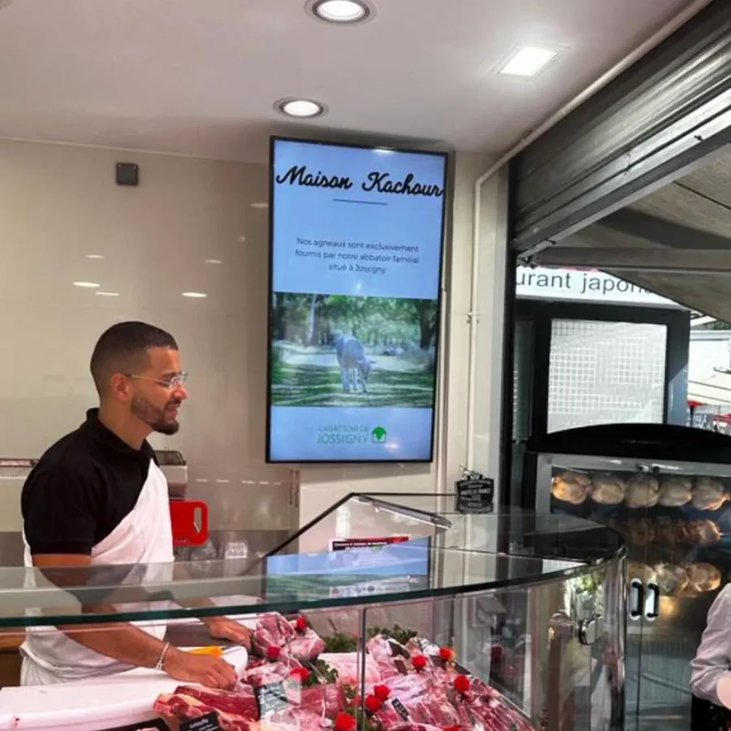

Écran et menuboard pour boulangerie, boucherie et commerce de bouche
Dans un commerce de bouche, le client attend son tour. Ces deux minutes devant le comptoir sont le seul moment de la journée où il regarde vraiment ce que vous avez à lui proposer.

La file d'attente est votre meilleur emplacement publicitaire
Un client qui attend son pain regarde droit devant lui pendant une à deux minutes. C'est le seul moment de la journée où il est disponible, immobile et à trois mètres de vos produits. Aucune campagne d'affichage extérieur ne vous offrira jamais une attention pareille.
Ce que vous mettez dans ce champ de vision décide d'une bonne partie de vos ventes additionnelles : la part de tarte du jour, la nouvelle terrine, la formule sandwich-boisson-dessert. Une affiche imprimée le fait aussi, mais elle reste la même pendant six mois, et le client cesse de la voir au bout de la troisième visite.
Le menuboard, deux à quatre écrans alignés
Au-dessus d'un comptoir, la configuration courante est une rangée de deux, trois ou quatre écrans 43 pouces qui forment une seule carte. Chacun peut porter une famille de produits : les pains et viennoiseries sur l'un, le snacking sur le deuxième, la pâtisserie sur le troisième.
L'intérêt n'est pas seulement esthétique. Quand vous n'avez plus de quiches à 13 h, vous les retirez de l'écran depuis votre téléphone au lieu de les refuser trente fois. Quand vous sortez une fournée, vous la mettez en avant pendant l'heure où elle est chaude.
- Dalle mate, qui ne renvoie pas la lumière des spots du comptoir
- De 13 à 85 pouces selon la place disponible
- Les prix peuvent rester affichés en permanence sur un écran dédié
Le midi, la deuxième journée de la boulangerie
Beaucoup de boulangeries font aujourd'hui autant de chiffre entre 11 h 30 et 14 h qu'au matin. Mais l'affichage, lui, reste souvent celui du matin : le client de midi cherche une formule et un prix, et ne les trouve pas.
Un écran bascule tout seul. Viennoiseries et pains jusqu'à 11 h, formules sandwich de 11 h à 14 h, goûters et pâtisseries l'après-midi. Vous programmez une fois, le rythme se répète tous les jours sans que vous y touchiez.
Les fêtes se préparent six semaines à l'avance
C'est le calendrier propre à ces métiers, et celui où un écran rapporte le plus. Les bûches se commandent en novembre, l'agneau et le gigot à Pâques, le foie gras et les plateaux dès la mi-décembre, les galettes en janvier. Chaque campagne suppose une date limite de commande à marteler pendant trois semaines.
Vous préparez ces séquences une fois, en début de saison, et vous les programmez pour qu'elles se déclenchent au bon moment. En décembre, quand vous n'avez plus une minute, l'écran continue de rappeler que les commandes ferment le 20.
La vitrine, pour ceux qui passent devant
Une boucherie ou une boulangerie de rue passante gagne aussi à équiper sa devanture. Là, la contrainte change : derrière une vitre exposée, il faut un écran haute luminosité, jusqu'à 4000 cd/m², sans quoi l'image est noyée dès le milieu de matinée. Une photo de pièce de viande ou de tarte en grand format, visible du trottoir d'en face, fait entrer des gens qui n'avaient rien prévu.
Le budget
Un élément de menuboard intérieur démarre à 49 € HT par mois en 32 pouces, 69 € en 43 pouces sur 60 mois. Un écran vitrine haute luminosité est à 139 € HT par mois. Le matériel, le logiciel, la première boucle de dix visuels, l'installation, la formation et le SAV avec déplacement sont compris.
Un commerce qui fait imprimer ses affiches de fêtes, ses étiquettes de prix et ses affichettes de saison retrouve une partie de ce budget dès la première année. Estimez votre mensualité selon la configuration.
Ce qu'on nous demande dans les commerces de bouche
L'écran remplace-t-il l'affichage des prix obligatoire ?
Les prix doivent rester lisibles par le client avant l'achat. Un menuboard peut porter cette information, à condition qu'elle soit affichée en permanence et non en rotation : c'est pour cela que nous réservons en général un écran fixe aux prix, et les autres à la mise en avant. Nous en parlons sur place, en regardant votre comptoir.
Un écran tient-il dans l'atmosphère d'une boulangerie ?
Oui, ce sont des écrans professionnels prévus pour un fonctionnement continu. La chaleur et la farine ne posent pas de difficulté à la hauteur où ils sont posés ; nous évitons simplement l'aplomb direct d'un four ou d'une hotte au moment de choisir l'emplacement.
Faut-il prévoir une prise électrique ?
Oui, une prise classique. Si elle est loin, nous posons une goulotte à votre teinte pour cacher le câble. C'est une des questions que nous regardons lors de la visite, avec la nature du mur et la connexion internet.
À voir aussi
Les commerces de bouche partagent beaucoup avec la restauration rapide.
Un menuboard au-dessus de votre comptoir dès 49 € HT par mois
Nous venons mesurer, nous vous proposons une configuration, et nous créons votre première boucle de visuels.
Demandez votre étude gratuite
Dites-nous la largeur de votre comptoir et ce que vous vendez en snacking. Le nombre d'écrans d'un menuboard se décide sur place, en regardant la hauteur disponible.
- Réponse sous 48 heures
- Nous venons voir votre devanture sur place
- Simulation de votre vitrine, sans engagement